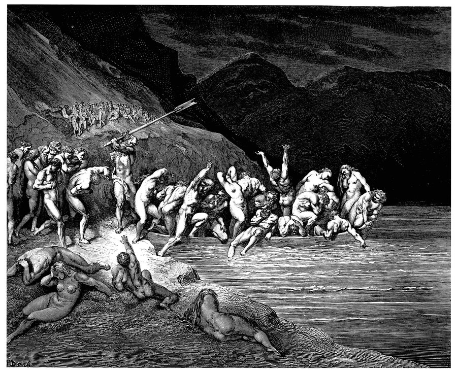
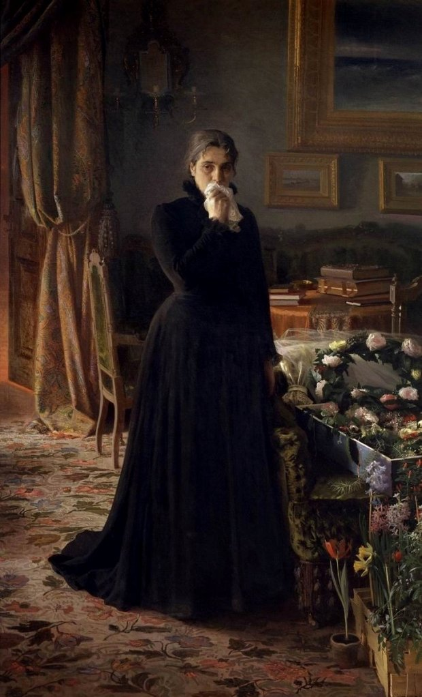
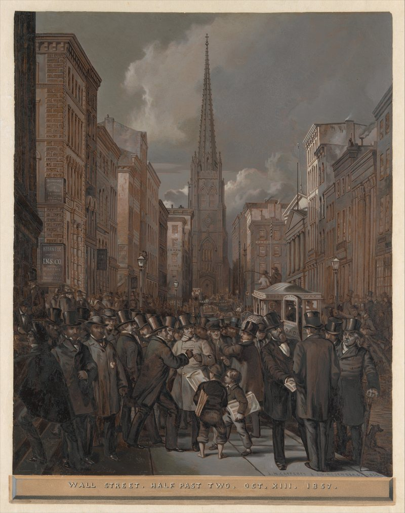
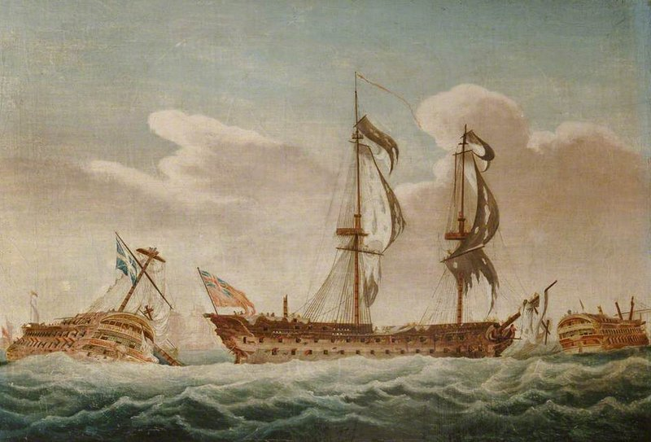
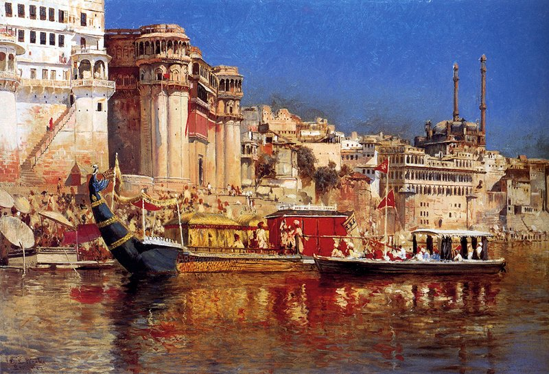

Frontispiece. J. M. W. Turner, The Fighting Temeraire, 1839. National Gallery, London; public domain.

Frontispiece. Gustave Doré, Charon Herds the Sinners onto His Boat, illustration for Dante’s Inferno, Canto III, 1861 (engraving). Public domain.

Frontispiece. Ivan Kramskoi, Inconsolable Grief, 1884. Public domain.

Frontispiece. James H. Cafferty and Charles G. Rosenberg, Wall Street, Half Past Two, October 13, 1857, 1858. Metropolitan Museum of Art; public domain.
Frontispiece. Joseph Severn, Shelley Composing Prometheus Unbound in the Baths of Caracalla (1845). Public domain.

Frontispiece. After Nicholas Pocock, The Brunswick and the Sinking Vengeur after the Battle of the Glorious First of June, 1794. Public domain.

Frontispiece. Edwin Lord Weeks, The Barge of the Maharaja of Benares. Public domain.